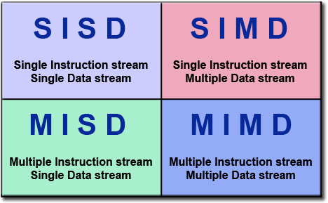
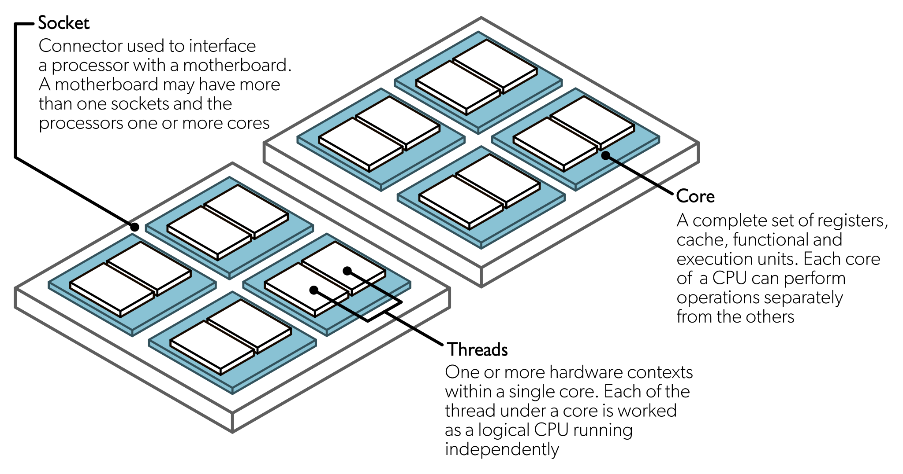

1 Introduction
While most people see R as a slow programming language, it has powerful features that dramatically accelerate your code 1. Although R wasn’t necessarily built for speed, there are some tools and ways in which we can accelerate R. This chapter introduces what we will understand as High-performance computing in R.
2 High-Performance Computing: An overview
From R’s perspective, we can think of HPC in terms of two or three things:2 Big data, parallel computing, and compiled code.
2.1 Big Data
When we talk about big data, we refer to cases where your computer struggles to handle a dataset. A typical example of the latter is when the number of observations (rows) in your data frame is too many to fit a linear regression model. Instead of buying a bigger computer, there are many good solutions to solve memory-related problems:
Out-of-memory storage. The idea is simple, instead of using your RAM to load the data, use other methods to load the data. Two notewirthy alternatives are the bigmemory and implyr R packages. The
bigmemorypackage provides methods for using “file-backed” matrices. On the other hand,implyrimplements a wrapper to access Apache Impala, an SQL query engine for a cluster running Apache Hadoop.Efficient algorithms for big data: To avoid running out of memory with your regression analysis, the R packages biglm and biglasso deliver highly-efficient alternatives to
glmandglmnet, respectively. Now, if your data fits your RAM, but you still struggle with data wrangling, the data.table package is the solution.Store it more efficiently: Finally, when it comes to linear algebra, the Matrix R package shines with its formal classes and methods for managing Sparse Matrices, i.e., big matrices whose entries are primarily zeros; for example, the
dgCMatrixobjects. Furthermore,Matrixcomes shipped with R, which makes it even more appealing.
2.2 Parallel computing
We will focus on the Single Instruction stream Multiple Data stream.
In general terms, a parallel computing program is one in which we use two or more computational threads simultaneously. Although computational thread usually means core, there are multiple levels at which a computer program can be parallelized. To understand this, we first need to see what composes a modern computer:

Streaming SIMD Extensions [SSE] and Advanced Vector Extensions [AVX]
2.2.1 Serial vs. Parallel

2.3 High-performance computing in R
2.3.1 Some vocabulary for HPC
In raw terms
Supercomputer: A single big machine with thousands of cores/GPGPUs.
High-Performance Computing (HPC): Multiple machines within a single network.
High Throughput Computing (HTC): Multiple machines across multiple networks.
You may not have access to a supercomputer, but certainly, HPC/HTC clusters are more accessible these days, e.g., AWS provides a service to create HPC clusters at a low cost (allegedly, since nobody understands how pricing works)
2.4 GPU vs. CPU

- Why use OpenMP if GPU is suited to compute-intensive operations? Well, mostly because OpenMP is VERY easy to implement (easier than CUDA, which is the easiest way to use GPU).3
2.5 When is it a good idea?

2.6 Parallel computing in R
While there are several alternatives (just take a look at the High-Performance Computing Task View), we’ll focus on the following R-packages for explicit parallelism:
parallel: R package that provides ‘[s]upport for parallel computation, including random-number generation’.
future: ‘[A] lightweight and unified Future API for sequential and parallel processing of R expression via futures.’
Rcpp + OpenMP: Rcpp is an R package for integrating R with C++ and OpenMP is a library for high-level parallelism for C/C++ and FORTRAN.
Others but not used here
And tools for implicit parallelism (out-of-the-box tools that allow the programmer not to worry about parallelization):
gpuR for Matrix manipulation using GPU
tensorflow an R interface to TensorFlow.
A ton of other types of resources, notably the tools for working with batch schedulers such as Slurm, and HTCondor.
Nonetheless, this claim can be said about almost any programming language; there are notable examples like the R package
data.table(Dowle and Srinivasan 2021) which has been demonstrated to out-perform most data wrangling tools.↩︎Make sure to check out CRAN Task View on HPC.↩︎
Sadia National Laboratories started the Kokkos project, which provides a one-fits-all C++ library for parallel programming. More information on the Kokkos’s wiki site.↩︎